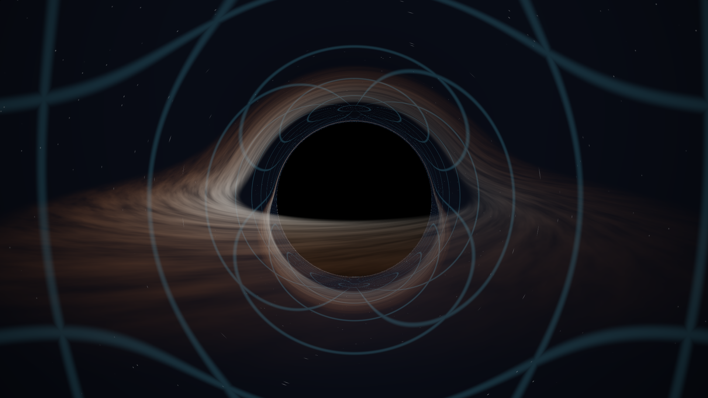

:max_bytes(150000):strip_icc()/JosephLouisLagrange-c21f7a64c22f4ee7b357988bb6f826b4.jpg) Who wasJoseph-Louis LagrangeJoseph-Louis Lagrange was an Italian mathematician, physicist and astronomer. He made significant contributions to the fields of analysis, number theory, and both classical and celestial mechanics.
Who wasJoseph-Louis LagrangeJoseph-Louis Lagrange was an Italian mathematician, physicist and astronomer. He made significant contributions to the fields of analysis, number theory, and both classical and celestial mechanics.
Lagrangian Mechanics from the Ground UpDeriving the Euler–Lagrange equation from Newton’s laws and introductory calculus, then putting it to work on the simple pendulum.Who wasJoseph-Louis LagrangeJoseph-Louis Lagrange was an Italian mathematician, physicist and astronomer. He made significant contributions to the fields of analysis, number theory, and both classical and celestial mechanics.Lagrangian mechanics is one of the most elegant ways to describe how physical systems move. Developed by Joseph-Louis Lagrange in the 18th century, it reformulated classical mechanics in terms of energy rather than directly tracking forces. Today, the Lagrangian approach is useful far beyond simple projectile or block-and-pulley problems—it provides a powerful framework for analyzing everything from pendulums and planetary motion to complicated mechanical systems and modern theoretical physics.
In this article, we'll look at the central ideas of Lagrangian mechanics from the tools of Physics 1 and introductory calculus. Rather than treating the Lagrangian as a formula to memorize, we’ll see where it comes from and see how familiar ideas like Newton’s laws, work, energy, and derivatives naturally lead us to it.
Let's start by considering a particle moving in one dimension:
$$x=x(t).$$
We can consider the work ($W$) done by a force on this particle, which follows
$$W=Fd$$
or, for infinitessimal differences,
$$dW=Fdx.$$
We can define the potential energy for a conservative force by
$$dW=-dV,$$
which suggests that a force doing positive work decreases potential energy. If I push a falling object downward, for example, it has less height to fall from and thus has less potential energy.
We can integrate both sides and isolate $F$ to obtain
$$F=-\frac{dV}{dx}.$$
We've found that a conservative force is one whose work can be represented by a potential-energy function $V(x)$. The force points "downhill" in $V$.
Now, let's return to introductory physics, where Newton tells us that
$$F=ma=m\ddot x.$$
We just learned that
$$F=-\frac{dV}{dx}$$
and can thus rearrange to obtain
$$m\ddot x+\frac{dV}{dx}=0.$$
This is an equation we will ultimately want to reproduce with Lagrangian mechanics.
Kinetic and Potential EnergyFrom introductory physics, we can define the kinetic energy $T$ as
$$T=\frac12m\dot x^2$$
and the potential energy $V$ as a function of $x$, which could represent a particle's height:
$$V=mgx\rightarrow V=V(x).$$
For our particle, we will define the Lagrangian as
$$\boxed{L(x,\dot x, t)=T-V}=\frac12m\dot x^2-V(x).$$
But why $T-V$? Well, let's see.
Optimizing a TrajectoryConsider the ideal (blue) trajectory $x(t)$ between the two purple endpoints below and its nearby red trajectory $x_{\epsilon}(t)=x(t)+\epsilon\eta(t)$.
In this demonstration, $\epsilon$ is an arbitrarily small number and $\eta(t)$ is a function describing a disturbance in the trajectory.
Because both trajectories have the same endpoints,
$$x_\epsilon(t_1)=x(t_1)$$
and
$$x_\epsilon(t_2)=x(t_2).$$
Therefore,
$$\eta(t_1)=\eta(t_2)=0.$$
The important thing is that $\eta(t)$ can otherwise be anything.
Now, imagine that we assign a number to each trajectory $x_\epsilon(t)$. This principle is known as a functional. In our case, we can use the action of the trajectory as our functional, which is a quantity that accumulates over time. Over our interval, we can define action ($S$) as
$$S[x(t)]=\int_{t_1}^{t_2}L\ dt.$$
$L$ is our Lagrangian. Don't worry about what it means just yet.
Since the action operates over the whole period of the particle ($t\in[t_1,t_2]$), it captures its entire history. The central principle is that the actual trajectory $x(t)$ is one for which the action is stationary. Imagine slightly changing the trajectory while keeping its endpoints fixed:
$$x(t)\rightarrow x(t)+\epsilon\eta(t).$$
This produces a slightly different action:
$$S\rightarrow S(\epsilon).$$
For the optimal, physical trajectory,
$$\boxed{\left. \frac{dS}{d\epsilon}\right|_{\epsilon=0}=0}.$$
This is known as Hamilton's principle. It is sometimes written as
$$\delta S=0,$$
meaning that the actual trajectory of a system makes the action stationary.
Let's see what's going on here.
Consider the two trajectories below. Use the point slider to switch between them.
During your time on Earth, you've probably observed that the trajectory above labeled "optimal" is closer to the one a ball bouncing under the influence of gravity will follow. For this trajectory, $\epsilon=0$ and, as suggested above, its corresponding action $S[x(t)]$ is at a critical point. It follows, then, that minimizing the action helps us discover a system's equations of motion.
Let's find the $\epsilon$ that puts $S[x_\epsilon(t)]$ at a critical point by differentiating with respect to $\epsilon$. First, we define $L$, which is a function of our system state determined by variables $x_\epsilon$, $\dot x_\epsilon$, and $t$.
$$L\rightarrow L(x_\epsilon,\dot x_\epsilon, t)$$
The action and its derivative are
$$S(\epsilon)=\int_{t_1}^{t_2}L(x_\epsilon,\dot x_\epsilon, t)\ dt \\ \frac{dS}{d\epsilon}=\int_{t_1}^{t_2}\frac{dL}{d\epsilon}\ dt.$$
Both $x_\epsilon$ and $\dot x_\epsilon$ depend on $\epsilon$, so the multivariable chain rule reveals
$$\frac{dL}{d\epsilon}=\frac{\partial L}{\partial x_\epsilon}\frac{\partial x_\epsilon}{\partial\epsilon}+\frac{\partial L}{\partial\dot x_\epsilon}\frac{\partial\dot x_\epsilon}{\partial\epsilon}.$$
Since $x_\epsilon=x+\epsilon\eta$ and $\dot x_\epsilon=\dot x+\epsilon\dot\eta$,
$$\frac{\partial x_\epsilon}{\partial\epsilon}=\eta$$
and
$$\frac{\partial\dot x_\epsilon}{\partial\epsilon}=\dot\eta.$$
Thus,
$$\frac{dL}{d\epsilon}=\frac{\partial L}{\partial x_\epsilon}\eta+\frac{\partial L}{\partial\dot x_\epsilon}\dot\eta.$$
And so, for our ideal trajectory,
$$\frac{dS}{d\epsilon}=\boxed{\int_{t_1}^{t_2}\left[\frac{\partial L}{\partial x_\epsilon}\eta+\frac{\partial L}{\partial\dot x_\epsilon}\dot\eta\right]\ dt=0}.$$
Almost there.
The Annoying $\dot\eta$ TermIt's hard to work with a derivative on $\eta$ because $\eta(t)$ is arbitrary. To reconcile this, let's get rid of it using integration by parts.
$$\int\frac{\partial L}{\partial\dot x_\epsilon}\dot\eta\ dt$$
Using
$$u=\frac{\partial L}{\partial\dot x_\epsilon},\ \ dv=\dot\eta\ dt \\ v=\eta,\ \ du=\frac{d}{dt}\left(\frac{\partial L}{\partial\dot x_\epsilon}\right)$$
reveals that
$$\int_{t_1}^{t_2}\frac{\partial L}{\partial\dot x}\dot\eta\ dt=\left[\frac{\partial L}{\partial\dot x_\epsilon}\eta\right]_{t_1}^{t_2}-\int_{t_1}^{t_2}\frac{d}{dt}\left(\frac{\partial L}{\partial\dot x_\epsilon}\right)\eta\ dt.$$
Recall that $\eta$ vanishes at the boundaries. As such,
$$\eta(t_1)=\eta(t_2)=0\rightarrow\left[\frac{\partial L}{\partial\dot x_\epsilon}\eta\right]_{t_1}^{t_2}=0$$
and hence
$$\int_{t_1}^{t_2}\frac{\partial L}{\partial\dot x}\dot\eta\ dt=-\int_{t_1}^{t_2}\frac{d}{dt}\left(\frac{\partial L}{\partial\dot x_\epsilon}\right)\eta\ dt.$$
Finally, we can write our integral in terms of $\eta$ only:
$$\int_{t_1}^{t_2}\left[\frac{\partial L}{\partial x_\epsilon}\eta+\frac{\partial L}{\partial\dot x_\epsilon}\dot\eta\right]\ dt=0 \\ \int_{t_1}^{t_2}\left[\frac{\partial L}{\partial x_\epsilon}\eta-\frac{d}{dt}\left(\frac{\partial L}{\partial\dot x_\epsilon}\right)\eta\right]\ dt=0 \\ \int_{t_1}^{t_2}\left[\frac{\partial L}{\partial x_\epsilon}-\frac{d}{dt}\left(\frac{\partial L}{\partial\dot x_\epsilon}\right)\right]\eta\ dt=0 \\$$
Getting Rid of $\eta$Let's represent the term in brackets as $f(t)$ so that we can rewrite the equation as
$$\int_{t_1}^{t_2}f(t)\eta(t)\ dt=0.$$
Because of how we have defined $\eta(t)$, we know this is true for every possible function $\eta(t)$ that vanishes at the endpoints.
Let's now suppose that
$$f(t)\neq0$$
in a region between the endpoints.
We can choose $\eta(t)$ to be nonzero specifically in that region and with the same sign as $f(t)$ such that
$$f(t)\eta(t)>0$$
there, causing the integral to be nonzero. That contradicts our assumption and thus proves that the only possibility is $f(t)=0$ everywhere.
Using our definition for $f(t)$, we see that
$$\left[\frac{\partial L}{\partial x_\epsilon}-\frac{d}{dt}\left(\frac{\partial L}{\partial\dot x_\epsilon}\right)\right]=0$$
or, equivalently,
$$\boxed{\frac{d}{dt}\left(\frac{\partial L}{\partial\dot x_\epsilon}\right)-\frac{\partial L}{\partial x_\epsilon}=0}$$
This is the Euler-Lagrange equation.
Testing the EquationLet's see if our Lagrangian $L$ works by applying the Euler-Lagrange equation to it.
For our particle,
$$L=T-V=\frac12m\dot x^2-V(x).$$
We calculate
$$\frac{\partial L}{\partial\dot x}=m\dot x$$
and differentiate with respect to time:
$$\frac{d}{dt}\left(\frac{\partial L}{\partial\dot x}\right)=m\ddot x.$$
Then, for the second term, we calculate
$$\frac{\partial L}{\partial x}=-\frac{dV}{dx}.$$
Applying Euler-Lagrange yields
$$m\ddot x-\left(-\frac{dV}{dx}\right)=0.$$
But $F=-\frac{dV}{dx}$, so
$$m\ddot x-F=0\rightarrow\boxed{F=m\ddot x}.$$
We have proven that Euler-Lagrange works to recover Newton's second law.
Why $L=T-V$?We've already established that if a physical trajectory makes the action stationary, then the Euler-Lagrange equation follows. But why should nature care that the action is $\int T-V\ dt$?
If you have faith in $F=ma$, then you should have equal faith in action and $L=T-V$. For ordinary classical mechanics, one can motivate $T-V$ by starting with Newton's law and looking for a function $L(x,\dot x,t)$ whose Euler-Lagrange equation reproduces it. For our function
$$L=\frac12m\dot x^2-V(x),$$
we just found that its Euler-Lagrange equation is exactly Newton's law. It is simply a scalar function whose variational equation parallels Newtonian dynamics.
The Simple PendulumLet's apply our Lagrangian solution method to a more complicated system: the single pendulum. We'll begin by finding an expression for the velocity of the pendulum's bob (its swinging mass).
If we measure $\theta$ from the downward vertical, we can write
$$x=l\sin\theta,\ \ y=-l\cos\theta.$$
We then calculate the bob's velocity:
$$\dot x=l\cos\theta\dot\theta,\ \ \dot y=l\sin\theta\dot\theta \\ v^2=\dot x^2+\dot y^2$$
and substitute to find
$$v^2=l^2\cos^2\theta\dot\theta^2+l^2\sin^2\theta\dot\theta \\ \boxed{v^2=l^2\dot\theta^2}.$$
Using the classical definition for kinetic energy,
$$T=\frac12mv^2=\boxed{\frac12ml^2\dot\theta^2}.$$
Potential energy is simple, relying only on the vertical position of the bob. Gravity gives
$$V=mgy=mg(-l\cos\theta)=\boxed{-mgl\cos\theta}$$
The Lagrangian is thus
$$L=T-V=\boxed{\frac12ml^2\dot\theta^2-(-mgl\cos\theta)}.$$
Now we apply Euler-Lagrange. We have
$$\frac{d}{dt}\left(\frac{\partial L}{\partial\dot\theta}\right)-\frac{\partial L}{\partial\theta}=0.$$
We calculate
$$\frac{\partial L}{\partial\dot\theta}=ml^2\dot\theta\rightarrow\frac{d}{dt}\left(ml^2\dot\theta\right)=ml^2\ddot\theta$$
and
$$\frac{\partial L}{\partial\theta}=-mgl\sin\theta.$$
Therefore,
$$ml^2\ddot\theta-(-mgl\sin\theta)=0 \\ \boxed{\ddot\theta+\frac{g}{l}\sin\theta=0}$$
This is the nonlinear equation of motion for a single pendulum. Furthermore, for small $\theta$, the substitution $\sin\theta\approx\theta$ is made, giving
$$\ddot\theta+\frac{g}{l}\theta=0,$$
which is the simple harmonic oscillator.
Notice how the plots of the simple harmonic oscillator (blue) and the exact single pendulum (red) diverge over time.
Cheat SheetBelow is a quick review and summary of the relevant conceptual picture behind Lagrangian dynamics. The derivation can be compressed into this chain:
Define our trajectory function
$$x(t)\rightarrow x(t)+\epsilon\eta(t),$$
where $\eta(t)$ represents an arbitrary perturbance. We assign a number to every possible trajectory over the period $T$ using its action (which is called a functional):
$$S[x(t)]=\int_TL(x,\dot x,t)\ dt.$$
Then we apply Hamilton's principle, demanding that
$$\frac{dS}{d\epsilon}=0.$$
Using the chain rule on the action integrand gives
$$\frac{\partial L}{\partial x}\eta+\frac{\partial L}{\partial\dot x}\dot\eta=0.$$
Integration by parts and factoring out $\eta$ then gives
$$\left[\frac{\partial L}{\partial x}-\frac{d}{dt}\frac{\partial L}{\partial\dot x}\right]\eta=0$$
and, because $\eta(t)$ is arbitrary,
$$\boxed{\frac{\partial}{dt}\left(\frac{\partial L}{\partial\dot x}\right)-\frac{\partial L}{\partial x}}=0.$$
One Level Up: GeodesicsEverything above came from one idea: nature picks the path that makes $S=\int L\,dt$ stationary, and Euler-Lagrange turns that into an equation of motion. Nothing in that argument required $L=T-V$ in a force field. Let's see what happens if we hand the same machinery the geometry of spacetime itself.
General relativity trades "a particle moving through space" for "a particle following a path through curved spacetime," and it trades our $L=T-V$ for
$$L=\frac12g_{\mu\nu}\frac{dx^\mu}{d\lambda}\frac{dx^\nu}{d\lambda},$$
where $g_{\mu\nu}$ is the metric, the object that tells you how to measure distance and time at each point, and $\lambda$ is some parameter along the path, standing in for the $t$ used above. Plug in the Schwarzschild metric, the spacetime surrounding a non-rotating mass $M$, and grind through the same Euler-Lagrange machinery from earlier, and out come the geodesic equations: the paths that light and free-falling particles actually follow. I'll write more about this in a future post.
We can shortcut most of that grinding. Notice that whenever a coordinate doesn't appear in $L$ itself (only its derivative does), Euler-Lagrange simplifies to
$$\frac{d}{d\lambda}\left(\frac{\partial L}{\partial\dot x}\right)=\frac{\partial L}{\partial x}=0\ \ \Rightarrow\ \ \frac{\partial L}{\partial\dot x}=\text{constant}.$$
A coordinate like this is called cyclic, and it hands you a conserved quantity for free. In the Schwarzschild metric, $t$ and $\phi$ are both cyclic — the geometry doesn't care what time it is, or which direction you decided to call $\phi=0$, so energy and angular momentum become two conserved quantities. This is Noether's theorem, and we've been using a special case of it the whole article; it's the same reason a cyclic $x$ handed us a conserved momentum back when we first looked at $\partial L/\partial\dot x$.
With those two constants in hand, the four-dimensional geodesic problem collapses to a single ordinary differential equation for the shape of the orbit. Writing $u=1/r$ as a function of the orbit's angle $\phi$,
$$\boxed{\frac{d^2u}{d\phi^2}+u=3Mu^2}.$$
Drop the right side and this is just $u''+u=0$ — a straight line, written in polar coordinates, exactly what a photon should do with no gravity around. The $3Mu^2$ term is the departure from Newton (towards space-time jazz), and it alone is responsible for everything below: the black hole's shadow, the bright ring wrapped around it, and the disk, which appears to fold up and over the top of the hole it's orbiting.
Read next